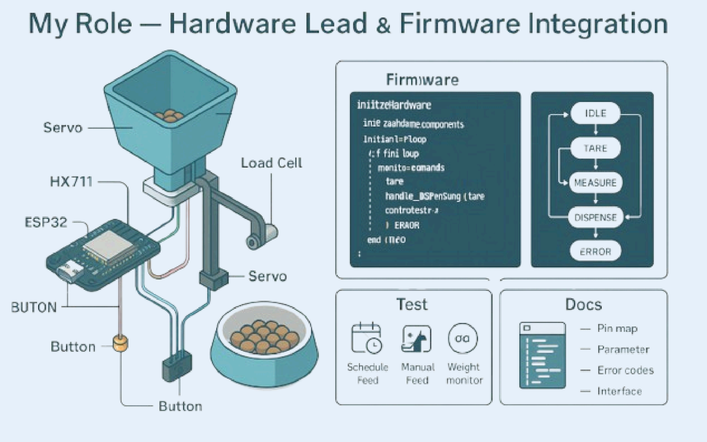

TopG Smart Navigation Boots are revolutionary IoT-enabled footwear designed to assist blind and visually impaired individuals in navigating their environment safely and independently.
(Obstacle Detection): Advanced ultrasonic sensors detect obstacles in real-time and provide haptic feedback.
(Navigation Assistance): GPS-enabled route guidance with voice commands and vibration alerts.
(Smart Environment Mapping) Creates and updates digital maps of familiar routes for enhanced mobility and confidence.
